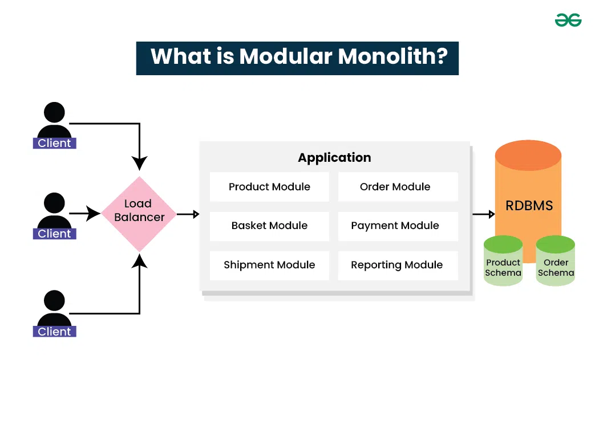

Modular monolith Media platform

This project is being shaped as a practical learning resource and reusable starting point for building modern applications with a clean architecture modular monolith.
What is a Modular Monolith?
A modular monolith is an architectural approach that structures an application as a single deployable unit, but internally organizes the code into loosely coupled, independently developable modules. Unlike a traditional monolithic application where code is often tangled, a modular monolith enforces clear boundaries between modules, each encapsulating a specific business capability. This brings many benefits: it retains the operational simplicity of a monolith (single deployment, easier testing, and straightforward observability) while offering the development advantages of modularity—such as parallel development, isolated testing, and the ability to evolve modules independently. It also provides a natural path toward microservices if needed later, as modules can be extracted with minimal changes. For many projects, a modular monolith strikes an ideal balance between complexity and simplicity, making it a compelling choice for teams aiming for maintainable and scalable software.
The goal is to explore how modular systems can stay maintainable while still feeling approachable for real-world projects. It brings together ideas recently gaining more and more popularity, mainly modular monoliths, with modules following clean architecture principles and clean separation of concerns, domain-driven design, asynchronous messaging, and a frontend that feels fast and modern.
As an educational reference, it is meant to show how a project can grow from a simple idea into a structured foundation that is easier to expand, reason about, and evolve over time, eventually this will be a documentation of that journey, and the architectural and design decisions made along the way.
What this project aims to demonstrate
- modular monolith architecture with clear boundaries between modules
- Clean Architecture modules: self-contained business capabilities with well-defined domain boundaries
- modern frontend development with a lightweight, high-performance experience with astro
- container-based deployment practices and environment orchestration for smoother development
- practical concepts such as policy based authorization, messaging, and scalable project structure
In the long term, this template is intended to serve as a useful reference for other personal projects and as a teaching example for common architectural patterns in software development.